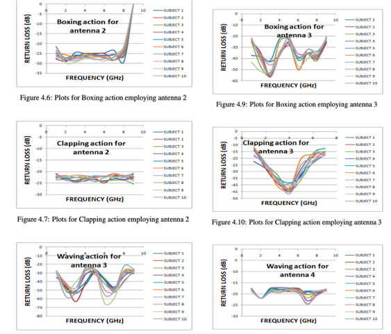

Human Activity Classification using on-body miniaturized Antennas
VNIT, IndiaTools and methods: Machine Learning, Matlab, Antenna Design and testing

About the Project:
- Successfully categorized diverse human activities utilizing a specialized Antenna-based Wrist Band prototype. This wearable technology facilitated accurate activity classification among users.
- Employed Ultra-thin antenna technology and Dynamic Time Warping Algorithm to achieve precise activity classification. Analyzed real-time S11 antenna signal data for robust results.
- Classification accuracy: 98.5%; Published 3 research papers based on this project (2 in SCIE indexed journal).
- Designed and fabricated a thin wrist band which is a standalone component - antenna.
- The fabricated write band was tied to the wrist of 100+ subjects in the university to collect extensive data of return loss parameters of the antenna while the subjects performed 6 pre-defined human activities.
- The were final year students from the university and had diversity in height, weight and the way they performed each action.
- After about 2 months of dataset collection, we moved ahead to apply different classification algorithms to classify the activities based on the signature captured in their return loss signal over time.
- Antenna return loss is proved to capture specific signatures based on the near filed perturbations happening around the antenna. For instance, signatures in movements as small as breathing and heart beats have been captured in previous work.
- We applied multiple algorithms to classify the activities - Dynamic Time Warping proved to be the best in our case resulting in 98.5% accuracy.